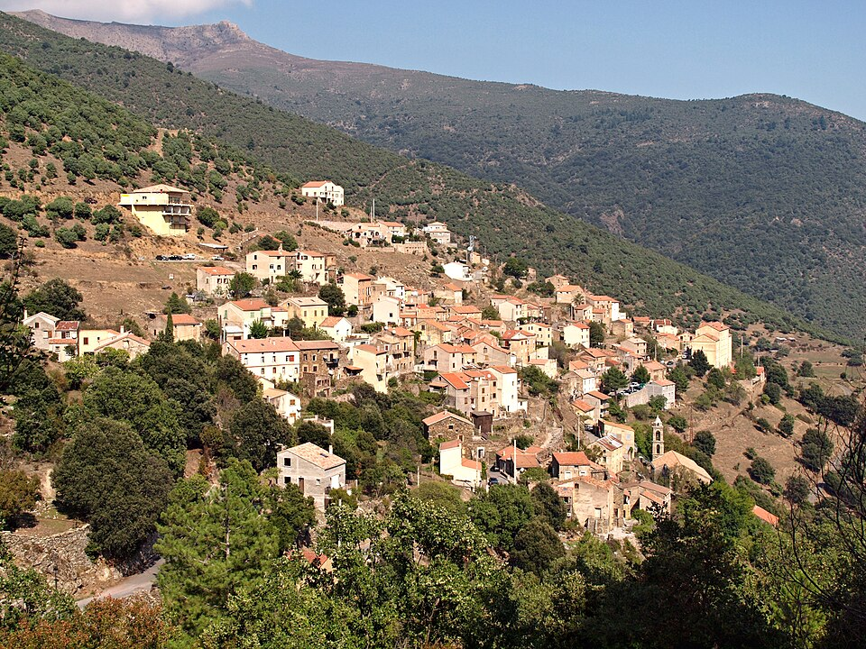

7. Asco (Falu)
42.452898, 9.032729

Asco falu 600 méteres magasságban fekszik, és sokáig elszigeteltségben élt, mivel a völgybe vezető utat csak a 20. században építették ki teljesen. A település híres méztermeléséről; a korzikai méz (Mele di Corsica) oltalom alatt álló eredetmegjelölésű (AOP) termék, az itteni gesztenyeméz különösen karakteres ízű. A falu építészete robusztus, a házak vastag gránitfalai a kemény telek ellen nyújtanak védelmet. Asco történelmileg "pásztorfalu" volt, a lakosság nagy része a nyarakat a hegyekben (transhumance), a teleket a faluban töltötte. A lakosság száma ma már alig haladja meg a 100 főt, de a turizmus miatt a nyári szezonban élénk a forgalom.